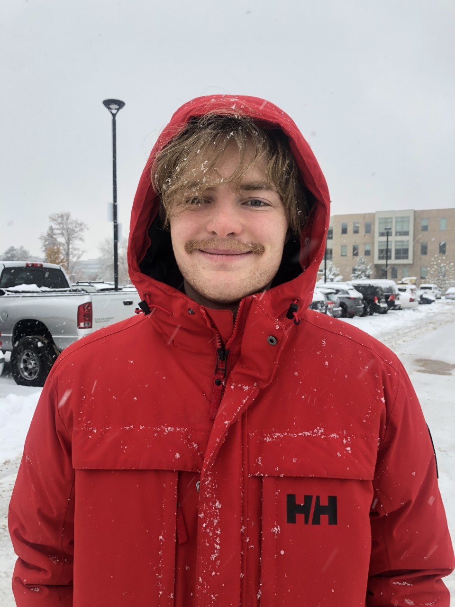
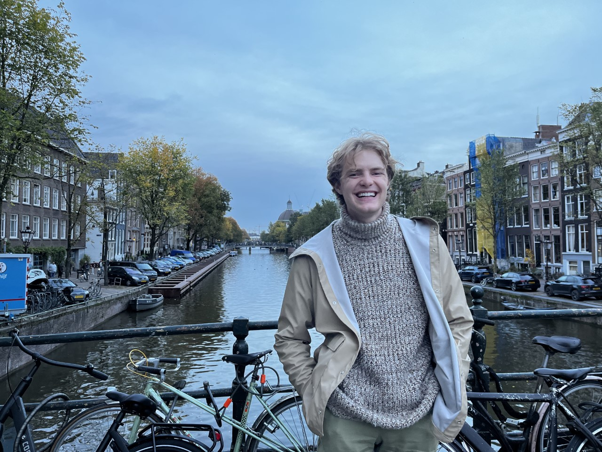

Nichols Crawford Taylor
Email: a.nichols.taylor@gmail.com
I'm currently senior undergrad (and prospective Ph.D. Student!) at the University of Utah studying Computer Engineering, Applied Math, and Computer Science. My main research interests are in robotics, specifically robotic manipulation. I'm planning to graduate in 2024. I'm a member of the LL4MA Lab, under Tucker Hermans, where I'm researching planning for robotic manipulation. I also contribute to projects in the Drew Research Lab for Autonomous Robotic Millisystems, under Daniel Drew. I enjoy skiing, rock climbing, and making things.
 
Toward a Millimeter-Scale Tendon-Driven Continuum Wrist with Integrated Gripper for Microsurgical Applications
Alexandra Leavitt, Ryan Lam, Nichols Crawford Taylor, Daniel S. Drew, Alan Kuntz
arXiv
Latent Space Planning for Multi-Object Manipulation with Environment-Aware Relational Classifiers
Yixuan Huang, Nichols Crawford Taylor, Adam Conkey, Weiyu Liu, Tucker Hermans
arXiv